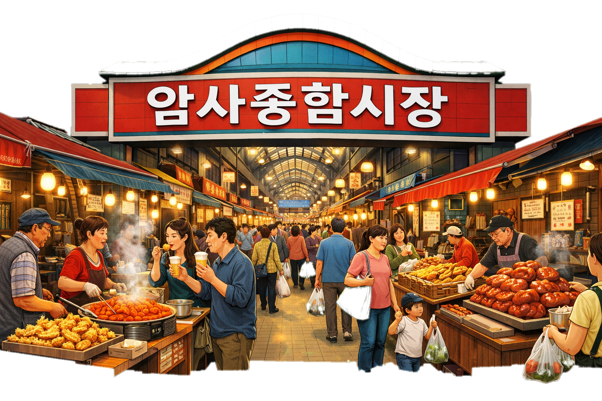

암사종합시장 완전 정복 가이드:
강동구 골목의 맛과 즐길 거리
서울 강동구 암사종합시장의 수제 반찬 가게, 즉석 떡갈비·닭강정 맛집, 암사동 선사유적지 및 광나루 한강공원 연계 여행 코스를 안내합니다.

1. 넓고 깨끗한 통로, 매일 들르고 싶은 생활 밀착형 시장
8호선 암사역에서 도보 3분 거리에 위치한 암사종합시장은 번잡한 대형 관광 시장과는 달리, 지역 주민들의 일상이 포근하게 녹아 있는 강동구 대표 전통시장입니다. 가장 먼저 눈에 띄는 장점은 다른 오래된 시장에 비해 통로가 넓고 정비가 매우 깔끔하게 되어 있어 유모차나 장바구니를 끌고 걸어도 부딪힘 없이 쾌적하다는 점입니다.
여유로운 분위기 속에서 상인들과 안부를 나누고 덤 한 줌 더 얹어주는 따뜻한 정(情)이 그대로 살아 있어 주말 가족 단위 장보기 손님들의 만족도가 높습니다.
2. 반찬·떡갈비·닭강정, 실패 없는 '집밥' 미식 천국
암사종합시장의 진가는 바로 '반찬과 먹거리의 정성'에 있습니다. 시장 안쪽을 걷다 보면 매일 아침 직접 무쳐내고 조려내는 수십 가지 집밥 반찬 가게들이 줄지어 있는데, 깔끔한 위생 상태와 깊은 손맛 덕분에 인근 하남이나 송파에서도 일부러 장을 보러 올 정도입니다.
또한 그릴 위에서 육즙 가득하게 구워내는 수제 떡갈비, 바삭하게 튀겨낸 닭강정, 갓 만든 손두부와 모둠전, 가마솥 순대국밥 등 식사부터 간식까지 무엇을 골라도 실패가 없는 알짜 맛집들이 곳곳에 자리해 있습니다.
3. 암사동 선사유적지 & 광나루 한강공원 가족 나들이
암사종합시장에서 도보 15분(또는 버스 2정거장) 거리에는 6,000년 전 신석기 시대 사람들의 삶이 보존된 '서울 암사동 유적'이 있습니다. 아이들과 함께 선사유적지 박물관과 움집 체험을 마친 뒤 시장으로 내려와 떡갈비와 시장 간식을 맛보는 코스는 강동구 최고의 가족 주말 여행 코스입니다.
한눈에 보는 방문 핵심 정보
| 위치 · 지하철 | 서울 강동구 상암로 11길 25 · 8호선 암사역 1·4번 출구 도보 3분 |
|---|---|
| 영업시간 | 09:00 ~ 21:00 (반찬·먹거리 점포 저녁 20~21시경 마감) |
| 정기 휴무 | 연중무휴 (점포별 월 1~2회 자율 휴무) |
| 대표 먹거리 | 수제 떡갈비, 순살 닭강정, 60여 종 집밥 반찬, 떡·즉석 두부·족발 |
| 주변 연계 명소 | 서울 암사동 유적(신석기 유적지), 광나루 한강공원, 암사역사공원 |
암사동 선사유적지 & 암사종합시장 가족 코스
- 오전 10시 30분 · 서울 암사동 유적 관람: 8호선 암사역사공원역 또는 암사역에서 선사유적지를 방문해 넓은 잔디밭과 전시관을 둘러봅니다.
- 오후 1시 · 암사종합시장 점심 & 먹거리 탐방: 시장 내 국밥집이나 분식집에서 점심을 먹고, 인기 떡갈비·닭강정으로 입가심합니다.
- 오후 2시 30분 · 광나루 한강공원 산책 또는 반찬 장보기: 수제 반찬과 제철 과일을 장바구니에 담아 온누리상품권 할인 혜택과 함께 알뜰하게 귀가합니다.
자주 묻는 질문 (FAQ)
Q. 암사역에서 시장까지 걸어서 얼마나 걸리나요?
8호선 암사역 1번 또는 4번 출구로 나와 먹자골목 방향으로 약 200m(도보 3분)만 걸으면 바로 암사종합시장 입구 아케이드가 보입니다.
Q. 차량을 가져가면 주차할 곳이 있나요?
인근 암사1동 공영주차장을 이용할 수 있으며, 시장 가맹점에서 일정 금액 이상 구매 시 주차 지원이나 편의를 안내받을 수 있습니다.